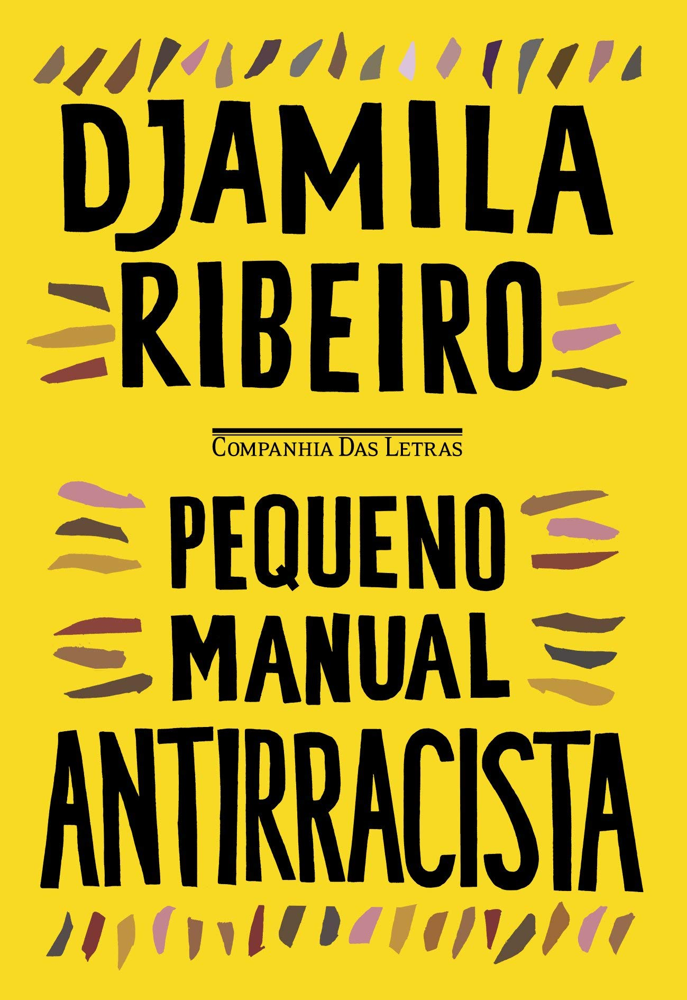

Pequeno Manual Antirracista
Escrito pela filósofa, escritora e feminista negra Djamila Ribeiro e publicado pela Companhia Das Letras, o Pequeno Manual Antirracista (2019) é um excelente ponto de partida para mulheres e, principalmente, homens brancos entenderem e começarem a fazer parte do movimento antirracista.

Embora o texto seja curto, sendo possível terminar o livro em poucas a horas, ele é denso. A leitura não é — ou não deveria ser — rápida. Cada capítulo é uma oportunidade de reflexão sobre onde nós estamos e o que estamos fazendo para ajudar cada uma das frentes da luta contra o racismo (spoiler: a resposta para essa última questão quase sempre é nada).
Com os porquês muito bem explicados no livro, não adianta dizer “não sou racista” ou se declarar a favor do movimento antirracista. Vivemos sob uma estrutura racista criada pela população branca e, desde o nascimento, nós brancos nos beneficiamos dela. Para acabar com o racismo, temos um papel fundamental e de responsabilidade nossa.
Antes de finalizar, deixo aqui algumas das reflexões que o livro me trouxe:
quantos livros de autoras e autores negros eu já li ou tenho na minha estante?
com quantas pessoas negras eu trabalho junto?
se eu tivesse um filho ou uma filha branca, ela assistiria desenhos ou leria histórias com protagonistas negras? ela teria bonecas e bonecos negros?
qual a proporção de negros em espaços que frequento ou em produções brasileiras que consumo?
Segundo o IBGE, mais da metade da população brasileira é negra.
O Pequeno Manual Antirracista está à venda na maioria dos lugares que vendem livros e custa um pouquinho mais que um Big Mac. Mais que uma recomendação, eu peço, por favor, que leiam.
Agradecimento à maravilhosa Angélica Custódio que me indicou o livro.